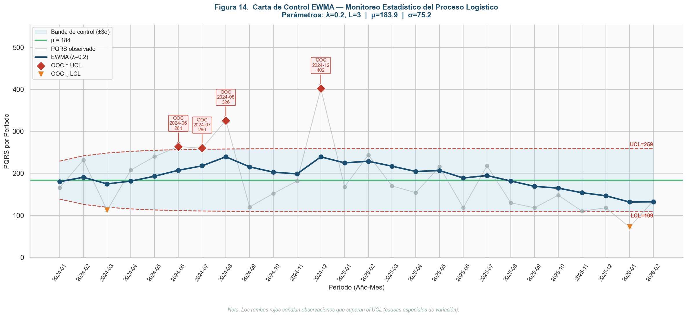
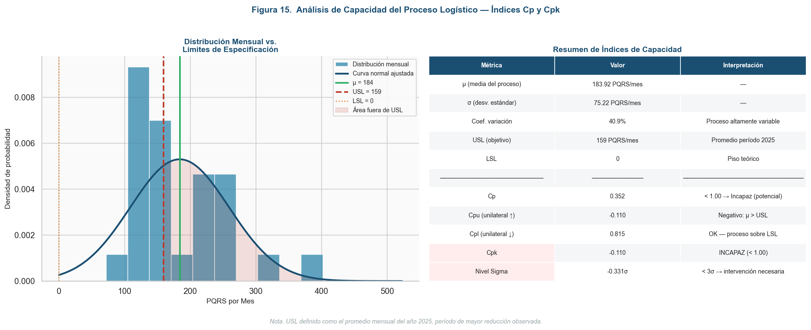

A quantitative diagnostic toolkit built for a mass-consumption distribution operation — specifically a pharmaceutical distribution network — to separate statistical noise from genuine process failure, and rank root causes by actual weight of evidence instead of gut feeling.
The situation
A distribution network handling pharmaceutical and mass-consumption goods was logging a growing stream of customer complaints (PQRS-type claims) — but the operations team's read on the "top cause" was based on whoever complained loudest last, not on data.
Before assigning corrective action budget, the real question had to be answered first: is this normal month-to-month variation, or is the process genuinely out of control — and if it's out of control, which specific failure mode is actually driving it, ranked by real weight of evidence?
Method
Before touching root causes, an EWMA (exponentially weighted moving average) control chart establishes whether the complaint rate is inside normal statistical variation or genuinely signaling special-cause events. This stops teams from reacting to noise as if it were a crisis.
Cp and Cpk indices quantify whether the process, as currently designed, is even capable of meeting the target complaint rate — independent of any one bad month. A Cpk below 1.0 means the process needs structural intervention, not a pep talk.
Every logged complaint gets categorized by failure mode (FEFO date-rotation misses, picking count errors, packaging/transport damage, order-entry mistakes) and each category's share of total events is calculated — not guessed.
Non-parametric tests (Kruskal-Wallis) confirm whether observed differences between sites, shifts, or categories are statistically real before they get written into a report as a finding.
Real output — statistical audit
This is an actual EWMA control chart generated for this project. The blue band is the statistically normal range; the red markers are periods where the complaint rate genuinely broke control limits — the months worth investigating, out of two years of data.

The process capability analysis went further: even outside those flagged months, was the process capable of hitting its own target?

Real output — root-cause ranking
Once every complaint was categorized and counted, the picture stopped being a debate. Redrawn here without the client's internal site/office labels — the ranking itself is the real finding:
Top 4 causes accounted for 87.2% of all logged complaints — a Pareto-style concentration that turned a vague "quality is bad" complaint into four specific, assignable corrective actions.
Why it matters to a client
Any operation handling regulated or time-sensitive goods — pharma, cold chain, food distribution — runs the same risk: reacting to whichever complaint reached a manager's desk instead of the one actually driving the numbers. This toolkit replaces that with a repeatable four-step audit any operations or quality team can run on their own complaint log.
This is a diagnostic and statistical-ranking toolkit, not an automatic fix — it tells you which cause to attack first with real evidence behind the priority order. Implementing the corrective action itself is a separate, operations-specific step. Client and site names in this write-up have been generalized to protect confidentiality; the statistical results shown are real.
I build the same audit — control chart, capability check, quantitative root-cause ranking — around your own data.
Get in touch →